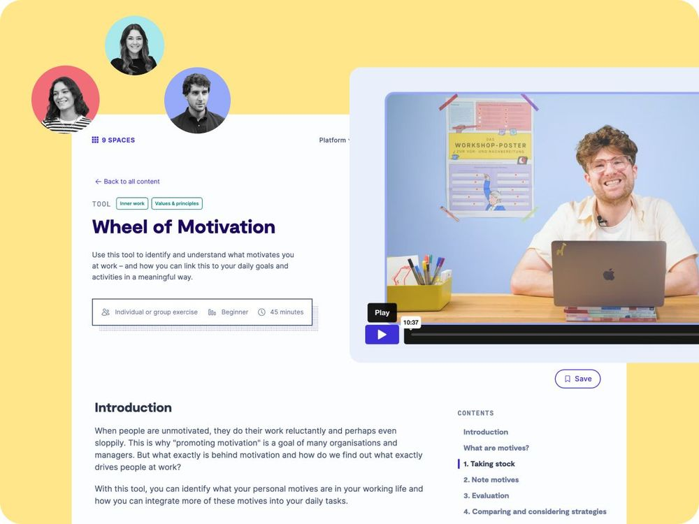

Business
5+ seats
Access for multiple team members within a tailored plan
At a time when democracy is under strain, stable and forward-thinking media companies matter more than ever. 9 Spaces helps you lead the transformation with clarity and confidence.

Learn how to successfully lead transformation in the media industry.
Few industries are under as much pressure to transform as the media sector.
New channels emerge continuously, formats evolve rapidly, and traditional newsroom structures are giving way to more networked, cross-functional ways of working. With this shift comes a significant rise in organizational complexity.
Publishing alone is no longer enough. Today’s media portfolios are increasingly diverse, and audiences play a growing role in defining what makes a product valuable. This calls for a stronger user-centered mindset and shorter, more agile development cycles.
The question is no longer whether to use AI, but how to integrate it responsibly and strategically into the fabric of the organisation.
As a small publisher, we’re passionate about independent media. Our methods support you in navigating transformation with confidence.

Access for multiple team members within a tailored plan
Our team is happy to help you find the perfect solution for your organisation.